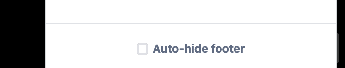
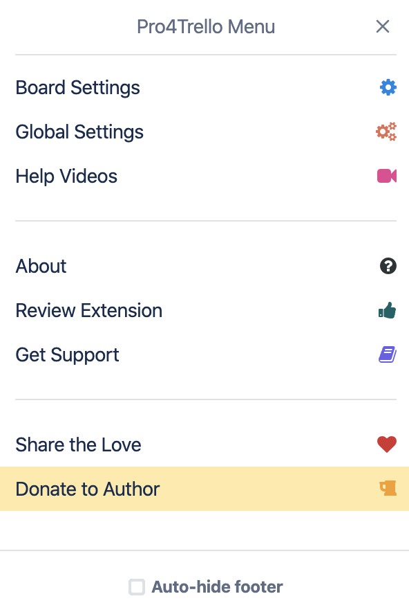

Pro4Trello hits version 3.1
A lot of issues fixed, some feature wishes granted to great users!
1. WHAT'S NEW?
1.1 AUTO-HIDE FOOTER
You can now set the footer to automatically hide. Could not be easier really...

Just hit the menu and check that "Auto-hide footer" checkbox.
1.2 NEW STUFF IN MENU
Easy access to global settings (applicable accross all boards) and helper videos.

1.3 HIDE ALL LISTS
Just like you can show all lists, you can now simply hide all lists from the "Lists" menu. Ez.

2. WHAT WAS FIXED?
Thank you for your patience!
All languages are now supported for list/card titles => filters and list options work
Custom backround is now showing (following Trello updates)
Pretty card descriptions are now working again
Prioritized cards are now rendering with proper color